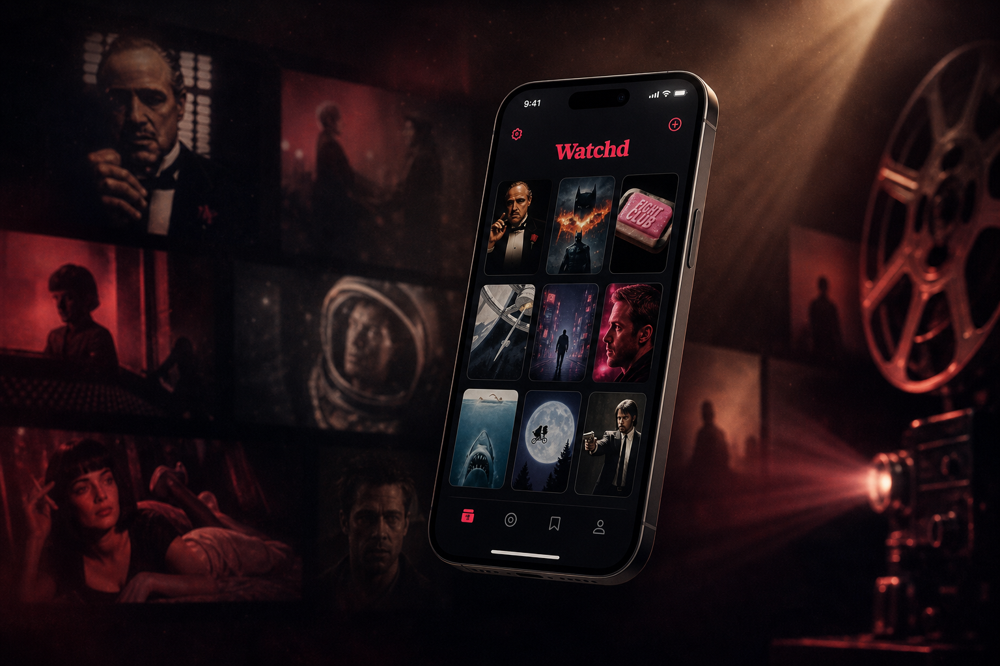

A library that feels like home
Your watched films, watchlist, and ratings — all in one elegant grid.
Library
128 watched · 47 saved
Watchd is the calmest way to remember what you've watched, rate what you loved, and never forget what's next. Built for film lovers, free for everyone.

Three core ideas, polished until they feel obvious. Everything else just gets out of the way.
Your watched films, watchlist, and ratings — all in one elegant grid.
Discover trending films and hidden gems, filtered by your taste.
One tap to mark a film as watched, rate it, or save for later.
No setup, no onboarding maze. Open the app and you're moving.
Tap "Continue with Google" — your library syncs instantly across iPhone and iPad.
Search any film or show, or drift through curated discover feeds powered by TMDB.
Mark as watched, save for later, rate with stars, jot a note. That's it.
Yes. No subscriptions, no in-app purchases, no ads. We may add optional premium features later, but the core experience stays free.
No. We don't run analytics SDKs, advertising networks, or any cross-app tracking. Read our Privacy Policy for the full breakdown.
iPhone (iOS 18 and later). iPad and Apple TV support are on the roadmap.
Anytime, from Settings → Account → Delete account. Your data is permanently removed.
From TMDB. Watchd is not endorsed or certified by TMDB.
Free on the App Store. Built with care for people who love film.
Download Watchd